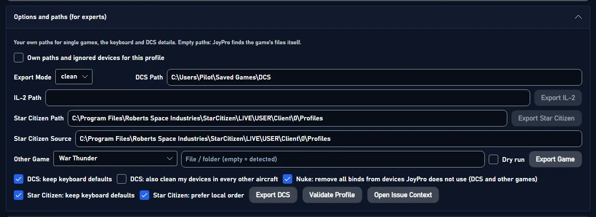

DCS čuva svoje kontrole po letelici i po uređaju: svaki modul ima sopstvene dodele na vašoj palici, a DCS svakom uređaju dodaje sopstvene podrazumevane dodele. JoyPro učitava te datoteke u jedan profil, omogućava vam da napravite relacije koje odjednom pokrivaju sve vaše letelice („Gear“ u F-16C, F/A-18C i A-10C II) i upisuje ih nazad u datoteke svake letelice. Dok letite ništa ne radi u pozadini: DCS čita svoje datoteke kao i uvek.
DCS World direktno (sopstvene datoteke dodela)
- Podrška
- direktno (sopstvene datoteke dodela)
- Komanda mašine
engine dcs- Datoteka dodela
Saved Games\DCS\Config\Input\<aircraft>\joystick\<device>.diff.lua(Lua diff), tastatura i modifiers.lua; prateća datoteka.jp- Ulazi koje igra čita
- čita 128 dugmadi, 8 osa, 4 Hata po džojstiku (dokumentovano)
- Lista komandi iz
- ulazne Lua datoteke instalacije, koje pokreće DCS-ov sopstveni
luae.exe(DCS ostaje zatvoren) - Test u igri
- 56/56 koraka prođeno (2026-10-11)
- ✓ Uvezi
- ✓ Izvoz
- ✓ Dodele tastature
- ✓ Modifikatori
- ✓ Lista komandi napravljena na vašem računaru
- ✓ Pratilac igara
- ✓ Krive osa i mrtve zone
- ✗ Podešavanja kontrola u igriDCS čuva svoja force feedback podešavanja po uređaju i letelici (FF Tune), vidi Force feedback u igri; nema opštih podešavanja upravljanja igrom kojima treba upravljati.
- ✓ Podešavanja force feedback-a u igri
- ✓ Force feedback iz telemetrije
- ✓ Snimanje telemetrije
- ✓ Virtuelni joystick (vJoy)
- ◐ Virtuelni Xbox pad
- ✓ Virtuelne funkcije
- ✓ Čarobnjak za podešavanje / Auto Assign
- ✓ Kokpiti
- ✓ Podsetnici
- ✓ Test u igri
Iz matrice podrške, generisane iz koda mašine: sve igre.
#Pokrenite sve u 3 koraka
- Podesi sve umesto mene
na stranici Početak - Koristi ovu dugmad
prvo pogledajte listu - Upiši u moju igru
DCS neka ostane zatvoren
Pre: ako kartica DCS na stranici Početak traži listu komandi, prvo pritisnite Napravi listu.
Zatim: pokrenite DCS. Vaše dodele su u Options > Controls, za svaku letelicu.
Da li ste ranije dodeljivali dugmad u DCS-u? Onda stranica Početak nudi Uvezi, zatim popuni praznine. Vaše dodele ostaju, a samo slobodna dugmad dobijaju nove poslove. Pogledajte Brzi početak: neka moja palica proradi.
#Gde treba da budu funkcije?
Podešavanje postavlja jedno veliko pitanje, sa klizačem. Ono je najvažnije u DCS-u, jer letite mnogo različitih letelica.
| Levi kraj | Desni kraj |
|---|---|
| Isto dugme za isti posao u svakoj letelici | Gde je na pravoj letelici |
| Stajni trap je na istom dugmetu u svakom avionu. Lako se uči. | Svako dugme radi ono što na tom mestu radi dugme prave palice. |
Brzo podešavanje koristi vaš poslednji izbor (na početku sredinu). Top i throttle se nikada ne pomeraju. Pogledajte Gde treba da idu funkcije?.
#Gledanje okolo bez praćenja glave
Nemate TrackIR, nemate VR? Podešavanje stavlja gledanje okolo na jedan hat vaše palice: napred, nazad, levo i desno. Mala palica za palac na vašem throttle-u može da dobije ose pogleda. Pogledajte Praćenje glave i gledanje okolo.
Podešavanje prvo postavlja jedno pitanje: Da li koristite praćenje glave ili VR? Da (praćenje glave, praćenje lica, Tobii ili VR, ili planirate da ga nabavite): nema dugmadi za pogled na vašim uređajima, samo „ponovo centriraj pogled“. Ne: gledanje okolo dobija dobro mesto na hatu vaše palice.
#Vaše dodele na kneeboard-u
DCS može da prikaže stranicu po letelici na svom kneeboard-u. JoyPro tamo stavlja listu vaše dugmadi: otvorite Raspored, pritisnite Podsetnici, zatim Stavi na kneeboard. U kokpitu otvorite kneeboard: vaša stranica je tamo. Pogledajte Vidite svoje dodele na DCS kneeboard-u.
#Šta JoyPro radi za DCS
- Uvezi: dodele svake letelice na vašim palicama, throttle uređajima i pedalama ulaze u vaš profil, sa vašim modifikatorima i podešavanjima osa. Podrazumevano ulaze i podrazumevane dodele DCS-a koje su aktivne na vašim uređajima, pa se ništa ne gubi kada ponovo izvezete.
- Relacije: jedna relacija je jedna funkcija u svakoj letelici. „Weapon release“ može biti pickle dugme u F-16C i u A-10C II, sa jednim dugmetom na vašoj palici.
- Izvoz: JoyPro upisuje datoteke svake označene letelice. DCS zatim prikazuje vaše dodele u Options > Controls.
#Uvezite svoje DCS dodele
- Otvorite Početak. Kartica DCS prikazuje sliku igre. Ako kartica traži listu komandi, prvo pritisnite Napravi listu: JoyPro čita svaki instalirani modul pomoću DCS-ovog sopstvenog Lua (DCS ostaje zatvoren; od nekoliko sekundi do minuta).
- Pritisnite Uvezi na kartici DCS. Ostavite označeno Sve moje DCS letelice ili uklonite oznaku i izaberite letelice kojima letite.
- Pritisnite Uvezi sada. Vidi moje relacije otvara ono što je stiglo.


#Napravite i proverite relacije
Na stranici Relacije relacija navodi svoju radnju po letelici. Koristite filter letelica da vidite jedan modul, a tok relacija da spojite radnje više letelica u jednu relaciju. Zatim Proveri na stranici Izvoz: pronalazi dugme koje u istoj letelici radi dve stvari pre nego što to uradi DCS.
#Izvoz u DCS
- Zatvorite DCS. JoyPro odbija da upisuje dok DCS radi, jer DCS upisuje svoje datoteke kada se zatvara.
- Otvorite Izvoz. Na kartici DCS, Letelice... navodi svaku letelicu iz vašeg profila: upisuju se samo označene letelice, a ostale zadržavaju svoje datoteke tačno onakve kakve jesu.
- Ostavite prvi izbor, Zameni na mojim uređajima uz Obriši i moje druge uređaje, ako u JoyPro-u podešavate svoje palice. Pritisnite Izvezi sada na kartici DCS.


Pokrenite DCS i otvorite Options > Controls, zatim gore izaberite letelicu. Vaše dodele su u koloni vašeg uređaja pod DCS-ovim sopstvenim imenima komandi; podrazumevane dodele DCS-a koje je JoyPro uklonio prikazuju se kao prazna polja; vaši modifikatori su na DCS-ovoj listi modifikatora. Krive osa se prikazuju u Axis Tune za tu osu. Ostale letelice koje niste označili izgledaju kao ranije.
#Šta radite sami u DCS-u
- Za dodele ništa drugo nije potrebno. Ako koristite drugu Saved Games fasciklu (na primer
Saved Games\DCS.openbeta), podesite je jednom u Podešavanja > Igre pod Komande sačuvane u. - Za letelicu u HUD-u i za force feedback iz telemetrije JoyPro jednom instalira malu skriptu u DCS (pogledajte Napredno); i za to zatvorite DCS.
#Česte zamke
- „DCS je pokrenut“: zatvorite DCS (i pozadinski proces pokretača) i ponovo izvezite.
- Letelica je zadržala stare dodele: nije bila označena pod Letelice... na kartici DCS ili profil za nju nema relaciju.
- Palica ima dodele koje nikada niste napravili: to su podrazumevane dodele DCS-a na uređaju koji JoyPro nije upisao. Označite Obriši i moje druge uređaje ili pogledajte Podrazumevane dodele ispod.
- Dva identična uređaja: DCS ih razlikuje po ID-u instance; ostavite uključeno Uređaje istog imena smatraj jednim uređajem, da bi se uređaj kojem je Windows dao novi ID čitao kao isti uređaj.
- Komanda koju DCS prikazuje „nije na njegovoj listi“: dodao ju je mod (na primer Input Command Injector sa paketom tastera zajednice). Kada stranica Početak kaže Vaši DCS modovi su promenili listu kontrola; ponovo izgradite listu komandi, jednom pritisnite Osveži DB na njoj: JoyPro čita komande moda onako kako to radi DCS. Komande koje JoyPro pre toga pronađe u vašim DCS datotekama dodela već su poznate i označene sa iz vaših DCS datoteka.
#Datoteke koje JoyPro čita i upisuje
| Datoteka | Šta je to |
|---|---|
%USERPROFILE%\Saved Games\DCS\Config\Input\<aircraft>\joystick\<device>.diff.lua |
vaše dodele na jednom uređaju u jednoj letelici, kao razlike u odnosu na podrazumevane DCS dodele (keyDiffs, axisDiffs sa added / removed, ffDiffs) |
...\<aircraft>\joystick\<device>.jp |
JoyPro kopija sa imenima relacija i grupama, koju sledeći uvoz ponovo čita |
...\<aircraft>\keyboard\Keyboard.diff.lua |
tastatura (samo kada izvozite dodele tastature) |
...\<aircraft>\modifiers.lua |
modifikatori letelice |
<aircraft> je ime ulaznog profila koje modul navodi (na primer F-16C_50, FA-18C_hornet). Druga fascikla Saved Games (DCS.openbeta) podešava se u Podešavanja > Igre. Datoteke se upisuju bez oznake redosleda bajtova (BOM), jer DCS-ov Lua ne može da je učita.
#Komande iz modova
Neki modovi dodaju komande na listu kontrola u DCS-u:
- Input Command Injector (autor Quaggles, često uz paket tastera zajednice): dodatne komande nalaze se u
Saved Games\DCS\InputCommands\<module>\Input\<profile>\joystick\default.lua(ikeyboard), a injector u DCS instalaciji (Scripts\Hooks) pridružuje ih modulovoj sopstvenoj listi kada DCS učitava kontrole. - Moduli u
Saved Games\DCS\Mods\aircraft: donose sopstvene liste komandi.
JoyPro lista komandi (Napravi listu / Osveži DB) čita ih onako kako to radi DCS: iz fascikle Saved Games koju vaša DCS instalacija zaista koristi (DCS.openbeta za OpenBeta instalaciju), sa pridruženim komandama injectora kada je injector instaliran, i sa istim id-jevima komandi koje im daje DCS. Kada se vaši modovi promene, stranica Početak kaže Vaši DCS modovi su promenili listu kontrola; ponovo izgradite listu komandi; jedno Osveži DB donosi nove komande.
Komanda koja je u vašim DCS datotekama dodela, ali još nije na listi komandi (na primer mod koji ste dodali posle pravljenja liste), ipak je poznata: JoyPro uzima njen tačan id i ime iz datoteke i označava je sa iz vaših DCS datoteka na stranici Relacije, a stranica Početak predlaže ponovnu izgradnju.
| Datoteka | Šta je to |
|---|---|
Saved Games\DCS\InputCommands\... |
dodatne komande iz Input Command Injector-a (samo čitanje) |
<data>\GameData\DcsCommandsFromYourFiles.tsv |
komande pronađene u vašim DCS datotekama dodela koje nedostaju na listi komandi |
#Režimi izvoza u DCS-u
Svaki režim radi sa dodelama koje su u datoteci uređaja aktivne u DCS-u: podrazumevane dodele uređaja, minus ono što datoteka uklanja, plus ono što dodaje. JoyPro zatim upisuje samo stvarne razlike u odnosu na podrazumevane, kao što bi i sam DCS.
| Režim | Šta se dešava u izvezenoj letelici |
|---|---|
| Samo dodaj | Ništa se ne uklanja. Dodela čije dugme DCS već koristi za drugu komandu (i kao DCS podrazumevanu) ne upisuje se i dobija oznaku „Nije upisano u igru“. |
| Ažuriraj, zadrži dodele igre | Vaše dodele se upisuju; podrazumevane DCS dodele i vaše dodele iz igre ostaju, osim dodele druge komande na dugmetu koje vi koristite. |
| Ažuriraj, moj profil pobeđuje | Kao gore, i svaka komanda koju dodelite gubi ostalu dugmad u toj letelici (u svakoj datoteci uređaja i na povezanim uređajima bez datoteke; DCS podrazumevane dodele se računaju). |
| Zameni na mojim uređajima | Uređaji u koje upisujete dobijaju tačno vaše dodele u izvezenoj letelici, bez DCS podrazumevanih dodela. |
| + Obriši i moje druge uređaje | Povezani uređaji bez dodele u letelici gube tamo sve dodele, uključujući DCS podrazumevane. |
Opcije na stranici Izvoz (pod Opcije i putanje (za stručnjake)):
- Zadrži podrazumevane tastature (uključeno): datoteka tastature se ne upisuje. Isključeno: vaše dodele tastature se upisuju, a uklanjaju se samo DCS podrazumevani tasteri koje one zauzimaju; svaki drugi podrazumevani taster ostaje.
- Moji uređaji gube podrazumevane dodele DCS-a i u svakoj drugoj letelici (isključeno): uz Zameni, upisani uređaji se prazne i u svakoj instaliranoj letelici koju niste izvezli. Ulazni slojevi (UI sloj, kamera, opšti) se nikada ne diraju.



#Šta se nikada ne dira
- Uređaji koji nisu povezani zadržavaju svoje datoteke bajt po bajt.
- Uređaji koje uvoz zanemaruje i vJoy uređaj u koji JoyPro prosleđuje nikada se ne prazne.
- Tastatura se nikada ne prazni niti preuzima, ni u jednom režimu; dodele miša se nikada ne upisuju.
- Letelice koje niste označili i ulazni slojevi (UI sloj, kamera, opšti sloj) zadržavaju svoje datoteke.
- Force feedback podešavanja (
ffDiffs) datoteke uređaja koja se prazni ostaju.
#Podrazumevane dodele
DCS svakoj vrsti uređaja daje sopstvene podrazumevane dodele po letelici (Warthog palica dobija druge podrazumevane dodele nego generička palica). JoyPro ih poznaje iz čistih profila koje pravi iz vašeg DCS-a zajedno sa listom komandi: po jedan za svaku letelicu i vrstu uređaja. Zameni i Obriši i moje druge uređaje uklanjaju upravo te podrazumevane dodele sa uređaja u koje upisuju.
Za uređaje u koje JoyPro ne upisuje, Podešavanja > DCS: podrazumevane dodele nudi dve izmene same DCS instalacije, obe isključene dok ih ne uključite: uklanjanje podrazumevanih dodela iz svake datoteke džojstika (svaki original se čuva kao <file>.nocombo.bak) ili premeštanje DCS-ovih podrazumevanih datoteka za određene uređaje u JoyPro fasciklu rezervnih kopija. Izmenjene datoteke ne prolaze proveru integriteta na serverima koji je sprovode; Vrati datoteke DCS-a vraća svaki original. Posle ažuriranja DCS-a JoyPro pri pokretanju ponovo primenjuje uključenu opciju.
Datoteka uređaja sadrži samo razlike u odnosu na podrazumevane DCS dodele: aktivno u DCS-u = podrazumevane dodele, minus ono što datoteka uklanja, plus ono što dodaje. Svaki režim izvoza odlučuje koje dodele treba da budu aktivne; JoyPro zatim upisuje samo razliku. Primer u jednoj letelici:
| U letelici | Šta dobija datoteka uređaja |
|---|---|
| Podrazumevana DCS dodela koju zadržavate | ništa: to je već podrazumevana dodela (navedena je samo u .jp) |
| Podrazumevana DCS dodela koju ne želite | red „removed“ |
| Vaša sopstvena dodela koja nije podrazumevana | red „added“ |
| Podrazumevana dodela sa drugačijim podešavanjem (kriva, obrtanje) | red „changed“ |
#Letelice, krive, force feedback
- Po letelici: svaka relacija čuva svoju radnju po letelici; izvoz upisuje samo označene letelice.
- Krive osa: mrtva zona, zasićenje X i Y, zakrivljenost ili korisnička kriva od 11 tačaka, obrtanje i klizač, upisani po letelici kao DCS-ov sopstveni filter (ono što prikazuje Axis Tune). Podrazumevana kriva važi za svaku igru; kriva se može podesiti i za DCS ili za jednu letelicu (Dodele > Odziv ose).
- Force feedback u igri: Podešavanja > Force feedback DCS-a po uređaju podešava zamenu osa, obrtanje X i obrtanje Y (
engine dcs ffb set). Force feedback iz telemetrije: stranica Force Feedback instalira JoyPro kukuSaved Games\DCS\Scripts\Hooks\JoyProFfb.lua(DCS mora biti zatvoren; ostale skripte kao što su SRS ili Tacview i dalje rade). - HUD: HUD prikazuje dodele letelice kojom letite kada je DCS kuka instalirana (stranica HUD > Instaliraj DCS kuku: mala Lua datoteka plus jedan zaštićen red u
Export.lua, uz prethodnu rezervnu kopiju), ili letelicu izaberite ručno. - Praćenje: dodela koju promenite u DCS-u u Options > Controls primećuje se posle zatvaranja DCS-a; JoyPro pita da li da je preuzme. Porede se samo letelice čije su se datoteke promenile, sa podrazumevanim dodelama uređaja plus njegovom razlikom.
#Unutar integracije za DCS
flowchart LR
P["Vaš profil"] --> E["engine dcs export"]
C[("Čisti profili<br/>(DCS podrazumevano)")] --> E
E --> D["device.diff.lua<br/>+ .jp"]
E --> M["modifiers.lua"]
D --> G["DCS: Options ><br/>Controls"]
L["Raspored: Stavi na<br/>kneeboard"] --> K["Stranice za<br/>kneeboard"]
Kod: engine\EngineDcsImport.cs, engine\EngineDcsExport.cs, engine\EngineDcsExport.Modes.cs, engine\EngineDcsRefresh.cs, engine\DcsDeviceNames.cs, engine\DcsCommandNames.cs, engine\EngineDcsDefaultsStrip.cs.
- Imena uređaja: DCS imenuje džojstik kao
<DirectInput instance name> {<instance GUID>}, sa imenom instance tačno onako kako ga DirectInput prijavljuje, uključujući razmake na krajevima. JoyPro sopstvena imena uklanjaju te razmake;DcsDeviceNamespretvara u oba smera. Izvoz imenuje datoteku po sirovom imenu povezanog uređaja, po postojećoj datoteci za uređaj koji nije povezan, inače po JoyPro imenu. Datoteke koje je stariji JoyPro upisao pod skraćenim imenom čitaju se kada ne postoji datoteka sa DCS imenom i uklanjaju se posle upisa (uz rezervnu kopiju). - Lista komandi:
engine dcs refresh idpokreće ulazni Lua svakog modula u DCS-ovom sopstvenombin\luae.exe(bez prozora igre), u više istovremenih pokretanja; engleska imena komandi dolaze izl10n\en\LC_MESSAGES\input.moinstalacije, bez obzira na jezik koji DCS koristi.engine dcs refresh cleanpravi čiste profile: DCS-ov sopstveniInputData.clearProfilesa lažnom palicom po vrsti uređaja, u privremenu fasciklu Saved Games (vašConfig\Inputse nikada ne menja). Datoteke:%LOCALAPPDATA%\JoyPro2\GameData\CleanProfile\DCS\<aircraft>.cf,...\<aircraft>\<device type>.cf,KeyboardCleanProfile\DCS\<aircraft>.cf. - Uvezi:
engine dcs import(--planes,--only-connected,--merge-same-name,--include-defaults,--include-keyboard, prekidači za podešavanje--import-*);engine dcs scanprikazuje isto bez menjanja profila. - Izvoz:
engine dcs export--mode clean|add|merge|merge-overwrite --nuke-untouched-devices true|false --keep-keyboard-defaults true|false --clean-all-aircraft true|false --planes <csv> --ignore-device <d>;--clear-keyboard-defaults true(samo u komandnoj liniji) uklanja i sve ostale DCS podrazumevane tastere upisanih letelica. Rezervne kopije: svaka datoteka u<file>.jpbaki u%LOCALAPPDATA%\JoyPro2\GameBackupspre prvog upisa. - Provera:
engine dcs verify-cleanpušta DCS-ov sopstveni Lua da navede svaku podrazumevanu dodelu koja je još aktivna na vašim džojsticima (samo čitanje;--include-disconnectedsa lažnim palicama,--dump-activeza poređenje pre i posle izvoza). - Podrazumevane dodele u instalaciji:
engine dcs strip-defaults(apply|restore|status|auto, red-oznaka-- [[DCS_STRIP_JOYSTICK_DEFAULTS v1]], originali kao.nocombo.bak, svaku izmenjenu datoteku učitava DCS-ov učitavač pre nego što se računa) iengine dcs device-luas(list|remove|restore; datoteke se premeštaju u<data>\DcsDefaults\DeviceLuassa manifestom). Obe odbijaju rad dok DCS ili njegov program za ažuriranje radi. - Force feedback:
engine dcs ffb list,engine dcs ffb set,engine dcs ffb clear. - HUD kuka:
engine overlay dcs-hook status(install/remove): DCS šalje tip jedinice na127.0.0.1:1992.
#Poznata ograničenja
- Liste komandi i čiste profile dobijaju samo instalirani moduli.
- Uređaj za koji ste pokrenuli DCS čarobnjak za ose zadržava dodelu iz čarobnjaka kao podrazumevanu (
wizard.lua, po instanci uređaja); JoyPro je ne menja. - Ulazni slojevi koje DCS deli između letelica (General, UI layer, Combined Arms) se ne upisuju.
- Testovi:
engine\tests\smoke\dcsexportmodes.ps1(svaki režim, tamo i nazad, poništavanje bajt po bajt),smoke\dcskeyboard.ps1,smoke\dcsdefaults.ps1; u igritools\e2e\games\DCS.ps1iDCSCurves.ps1.
Sve tehničke napomene o ovoj igri (generisane iz repozitorijuma): dcs.md.